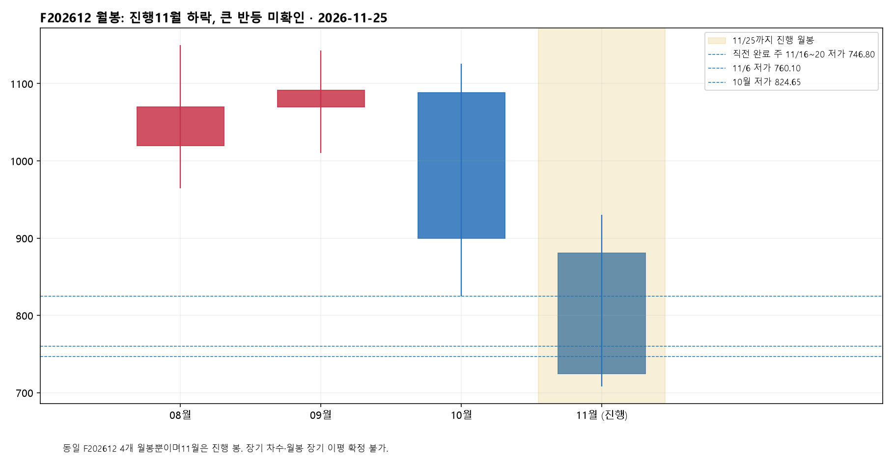
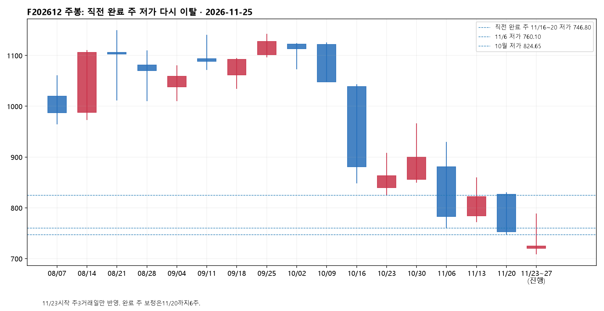
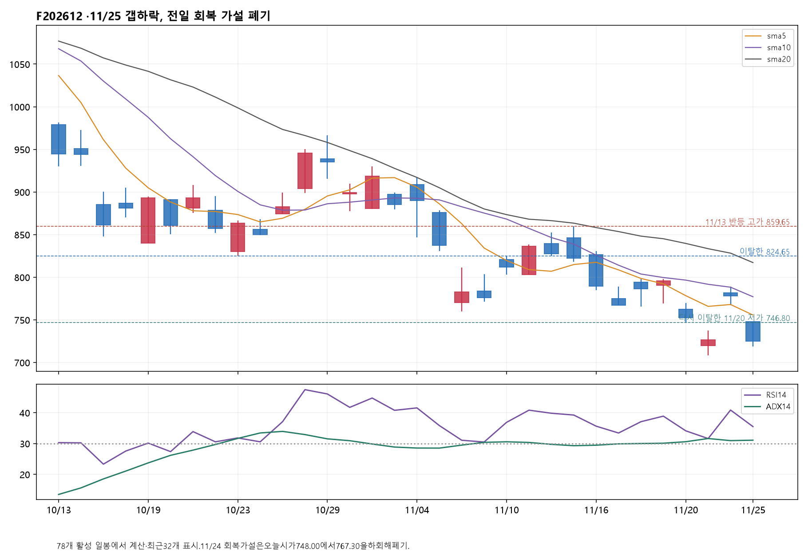
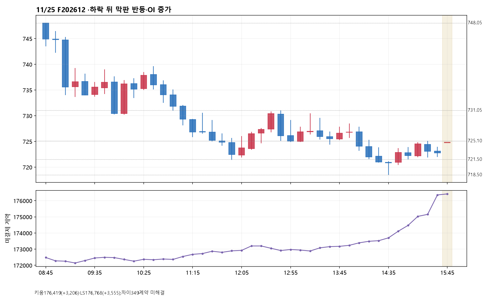
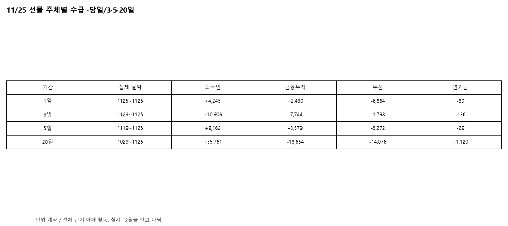
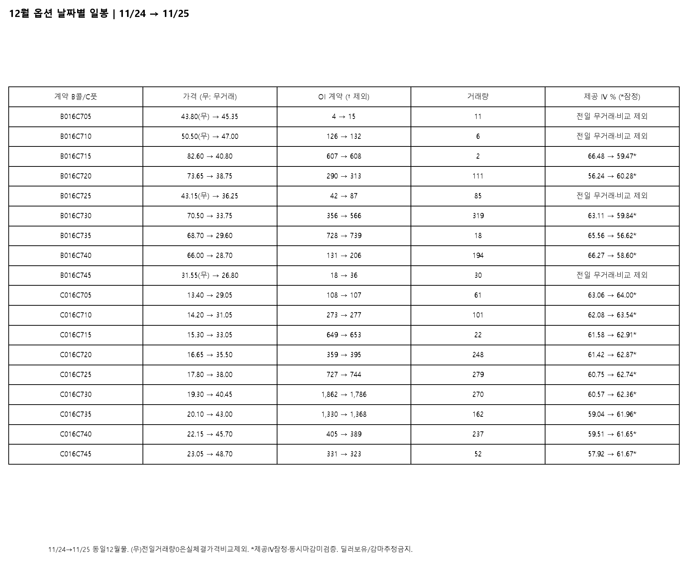

F202612 / A016C000 · 정규장 724.75 · OI 176,419 · 이후 야간 미반영
직전 11/24 판의 775.20 방어·781.85 회복 경로는 11/25 시가 748.00이 구조 경계 767.30을 바로 밑돌면서 폐기됐습니다. 이를 새 지지선으로 옮겨 유지하지 않습니다. 직전 대안의 767.30 이탈 경로는 실제 발생했고, 746.80도 종가로 다시 이탈했습니다. 11/13 859.65 → 11/23 708.25 → 11/24 789.05 → 오늘 718.50의 실제 앵커에서 선호는 상위 하락 중 반등 종료·저점 재시험 후보입니다. 이 순서만으로 완성된 A-B-C나 1~5파를 확정하지 않습니다. 대안은 708.25 이후 큰 반등의 깊은 조정이 아직 진행 중이라는 가설로, 708.25 실제 저가 침범 시 그 시작점 가설을 폐기합니다. 718.50은 오늘 저점 후보일 뿐 상위 추세 전체의 무효화선이 아닙니다. 731.05 회복은 단기 약화, 748.05 위 일봉 종가와 재지지는 오늘 하락 경로의 전환 확인, 789.05 실제 고점 돌파는 반등 종료 앵커 가설 철회 조건으로 구분합니다. 일반 충격파 하위 세분·차수 자료가 부족하여 하드룰 통과 확정 카운트·확률·피보 목표는 만들지 않습니다.
718.50 재시험 → 이탈·재저항이면708.25. 731.05 회복·재지지 시 단기 약세 약화,748.05 위 일봉·재지지면 오늘 하락 경로 전환.789.05 실제 돌파 시 반등 종료 앵커 가설 철회
737.25~739.65 → 746.80~748.05. 다음은767.30·789.05를 별도 확인. 718.50 실제 침범 시 오늘 저점 반등 가설 폐기,708.25 침범 시11/23 시작점 가설도 폐기
갭은 실제 시초가로 판단하고 야간 수익률을 현물/선물 시가에 대입하지 않음. 현재 단기 약세 우선·확률 산정 불가
11/25 F202612(A016C000) 정규장 종가 724.75, 전일 대비 -53.35(-6.86%)입니다. 전일 767.30을 지키는 회복 가설은 오늘 시가 748.00에서 이미 폐기됐습니다. 현재는 상위 하락 속 반등 실패 경로를 우선하며, 첫 회복 경계 724.85~725.10과 오후 반등 고점 730.85~731.05를 봅니다. 회복 실패 뒤 721.50~722.00이 무너지면 718.50, 이탈·재저항이면 11/23 저점 708.25 재시험 경로입니다. 반대로 731.05 위 완료 10분봉과 눌림 재지지가 확인되면 단기 약세 우선도를 낮추고 737.25~739.65, 이후 746.80~748.05를 확인합니다. 선물 외국인 순매수는 현물·투신 매도 및 가격 하락과 충돌하며 신규 롱의 증명이 아닙니다.
직전 11/24 판의 775.20 방어·781.85 회복 경로는 11/25 시가 748.00이 구조 경계 767.30을 바로 밑돌면서 폐기됐습니다. 이를 새 지지선으로 옮겨 유지하지 않습니다. 직전 대안의 767.30 이탈 경로는 실제 발생했고, 746.80도 종가로 다시 이탈했습니다. 11/13 859.65 → 11/23 708.25 → 11/24 789.05 → 오늘 718.50의 실제 앵커에서 선호는 상위 하락 중 반등 종료·저점 재시험 후보입니다. 이 순서만으로 완성된 A-B-C나 1~5파를 확정하지 않습니다. 대안은 708.25 이후 큰 반등의 깊은 조정이 아직 진행 중이라는 가설로, 708.25 실제 저가 침범 시 그 시작점 가설을 폐기합니다. 718.50은 오늘 저점 후보일 뿐 상위 추세 전체의 무효화선이 아닙니다. 731.05 회복은 단기 약화, 748.05 위 일봉 종가와 재지지는 오늘 하락 경로의 전환 확인, 789.05 실제 고점 돌파는 반등 종료 앵커 가설 철회 조건으로 구분합니다. 일반 충격파 하위 세분·차수 자료가 부족하여 하드룰 통과 확정 카운트·확률·피보 목표는 만들지 않습니다.
전체 만기 선물 당일 순매매는 외국인 +4,245, 기관 -4,413, 금융투자 +2,430, 투신 -6,864, 연기금 -80, 개인 -24계약입니다. 금융투자 제외 기관은 -6,843계약(기관−금투)으로 기관 합계와 중복 가산하지 않습니다. 외국인 최근 3·5·20일은 +10,906/+9,162/+35,761계약인 반면 투신은 -1,798/-5,272/-14,076계약입니다. 금융투자는 오늘 매수지만 3·5·20일 -7,744/-3,579/-18,654계약이어서 당일 전환과 누적 매도를 구분합니다. 전일 투신 +6,157에서 오늘 -6,864로 반전해 외국인·투신 매수 합의가 깨졌습니다. 특정 계좌의 신규/청산 구분과 월물별 보유잔고는 확인되지 않습니다.
현물 KOSPI 외국인 당일 -18,821, 투신 -3,506, 금융투자 +3,644, 연기금 +451(LS 원천 금액 단위, 원화 환산 미검증)입니다. 외국인 현물 3·5·20일도 -13,340/-28,381/-167,487로 순매도입니다. 외국인은 지수선물 +4,245계약·주식선물 +37,661계약이지만 현물은 매도여서 일방향 신규 롱으로 합산하지 않습니다. 동일 계좌의 헤지/차익 결합 거래인지는 모릅니다. 프로그램은 원천 단위 순매매 총 -989,762, 차익 +141,841, 비차익 -1,131,602로 비차익 유출이 확인됩니다. 원천 총합과 구성 합에 1단위 차이가 있어 반올림 가능성만 표시하고 덮어쓰지 않습니다. LS 마감 후 보존 스냅샷의 시장 베이시스 +0.94, 이론 +1.00, 차이 -0.06이며 전일 -0.58/-1.72에서 개선됐지만 현물 15:30·선물 15:45 비동시 종가 비교입니다. 기존 EOD의 KOSPI200 200종목 중 외국인은 삼성전자·SK하이닉스 합계 -1,574,252, 나머지198개 -234,657(저장 원천 금액 단위), 나머지 순매수100·순매도98개입니다. 두 대형주 제외 후에도 금액 순매도지만 종목 수는 갈리므로 전체 종목 동반 매도로 단정하지 않습니다. 투신은 나머지198개 -41,843, 순매수67·순매도127개입니다. 지수 기여도 비중과 KOSDAQ 전체 폭은 미확보입니다.
원천 표시시각 기준 08:45→09:55 가격 744.90→730.40(-14.50), OI172,481→172,476(-5)로 초기 하락은 OI 증가와 동행하지 않았습니다. 09:55→11:55는 가격 -7.95·OI +419, 11:55→14:35는 가격 -1.60·OI +804입니다. 오후 저점 이후 14:35→15:25에는 가격 720.85→722.75(+1.90), OI173,699→176,356(+2,657)로 방향이 바뀌었고, 마지막 15:45 단일가까지 가격 +2.00·OI +63입니다. 하루 하락·OI 증가와 막판 반등·OI 증가를 동시에 표시합니다. 이 관측은 미청산 계약 확대를 뜻하지만 신규 숏 3,206계약이나 외국인 신규 롱으로 배정할 수 없습니다. 14:35 표시봉 저가718.50은 사후 확인 앵커이며 실시간에 미리 알았던 신호가 아닙니다.
키움 OI176,419는 같은 현재 조회판의 전일173,213 대비 +3,206입니다. 전일 보존 원본173,997과 비교하면 +2,422이며 재조회 정정 -784의 원인은 미해결입니다. LS 당일 일봉/보존 시세는176,768, 전일173,213 대비 +3,555로 키움과349계약 차이가 있습니다. 원천을 합치거나 한쪽을 최종 확정값으로 고르지 않습니다. 차월 F202703은 종가714.75, 거래량84, OI9,046로 전일8,399 대비 +647입니다. OI 변화가 당일 거래량보다 커 집계 범위 충돌을 표시하고 차월 방향·롤오버 규모를 계산하지 않습니다. 근월과 차월은 별도 계약입니다.
12월물 콜·풋 행사가705~745의18계약을 날짜 지정 LS 일봉과 EOD 저장 체인의 코드·행사가·가격·거래량·OI로 대조했습니다. 참고 체인의 OI 커버리지는50.56%이고 옵션 체결시각은 검증되지 않았습니다. 예를 들어 풋725는17.80→38.00, OI +17, 거래량279이며 콜725 현재36.25·OI +45·거래량85입니다. 콜745·725·710·705는 전일 거래량0이므로 전일 가격을 실제 체결 종가로 사용한 등락 해석에서 제외합니다. 저장된 제공 IV는 두 마감 후 스냅샷의 잠정 비교일 뿐 동시 확정 IV 변화나 검증된 스큐가 아닙니다. 외국인 전체 만기 콜 -5,993계약/-41억원, 풋 +347계약/+109억원은 선물 순매수와 반대 방향의 거래 활동입니다. 신규/청산·딜러 매수매도 잔고가 없어 실제 감마·감마플립·최대고통·잔존 수량·평단은 판단 불가입니다.
KRX 공식 상품명세의 월물 두 번째 목요일 규칙과2026년 공식 휴장일 달력을 대조했습니다. 11월 월물 옵션 만기는11/12에 지났고 현재 F202612·12월 월물 옵션 만기는12/10입니다. 오늘11/25는 월물 만기일이 아니며, 월·목 위클리는 별도 계약입니다. 11/26 목요일 위클리 만기를 앞둔 날이지만 해당 위클리 만기 전후 완전한 체인·보유자 잔고가 없어 오늘 하락을 만기 청산·헤지 해소로 확정하지 않습니다. 11/24 반등은 오늘 종가까지 유지되지 않았다는 실제 가격 반응과 만기 원인 추정을 구분합니다.
10/12~11/20의6개 완료 주로만 동행 해석 배율을 계산했고11/23~25 진행 주는 보정에 넣지 않았습니다. 현물 외국인1.157·금투0.954·투신1.182·연기금0.988·개인0.811, 선물 외국인0.924·금투0.891·투신1.157·연기금1.013·개인0.930입니다. 예측 배율은 모두1.000이며 동행 배율은 인과 영향력·미래 확률이 아닙니다. 외국인·투신 현물 동반 매수와 당일 상승 뒤 다음 날 상승은3/8(37.5%; 같은 기간 상승일 기준4/13=30.8%), 선물 동반 매수·당일 상승 뒤 다음 날 상승은1/4(25.0%)입니다. 전일11/24 신호는 오늘 하락으로 지속 실패에 추가됐습니다. 현물 동반 매도·당일 하락 뒤 다음 날 하락은7/15(46.7%; 기준10/19=52.6%)이고 오늘 신호의 다음 날은미확인입니다. 소표본·사후 선택·시계열 의존성으로 미래 적중확률로 쓰지 않습니다. 옵션 주체 가중치는 자료 부족입니다.
F202612 활성 일봉2026/08/03~11/25의78개와 같은 계약10분봉을 사용했습니다. 월봉8~11월4개, 주봉은 같은 일봉 재표본화이며11월·11/23시작 주는 진행 봉입니다. 오늘 일봉은 완료, 08:45~15:45의42개 표시봉에서 마지막 단일가와15:25 이후 간격을 구분합니다. 최근3일은11/23·24·25, 5일은11/19·20·23·24·25, 20일은10/29~11/25입니다. 9월 선물 만기 뒤9/11~11/25의50거래일 관찰 합계는 외국인+40,871·기관-39,019·금투-23,011·투신-12,605·연기금+1,109계약입니다. 이는 전체 만기 거래 활동이며12월물 누적 잔고가 아닙니다. 전일 현물6개 필드의 재조회 정정과 t1617/t1664의78개 차이를 보존하고 이번 동일 조회판으로만 누적했습니다.
보조 현물은 같은 날짜 KOSPI4697.51(-6.16%), KOSPI200723.81입니다. KOSPI·F202612의10/12~11/25 OHLC264개 셀을 키움·LS로 대조했습니다. 현물 다중 시간대·지수 방향 연구·14단계 환경자료는11/24, 해외 본문은11/12/검증11/24 PARTIAL로 오늘 판단에서 제외합니다. 나스닥·SOX·다우·니케이의 오늘 완료 세션별 월/주/일/10분 비교는자료 부족입니다. 과거 Squeeze/ADX 연구의 F202609 26/36와 독립 KOSPI200 30/66 실패는 연구 경계이며 현재 예측력으로 사용하지 않았습니다. 현물 보조 누락과 검증된 선물 분석을 구분합니다.

완료10월 O1088.35/H1125.55/L824.65/C899.45 뒤 진행11월 O880.80/H930.00/L708.25/C724.75입니다. 전일 반등 후 다시 월중 저점권입니다.

완료11/16~20 주는 O826.50/H830.80/L746.80/C752.75. 진행11/23~25는 O719.90/H789.05/L708.25/C724.75로 전일 회복한746.80 아래로 복귀했습니다.

직전 11/24 판의 775.20 방어·781.85 회복 경로는 11/25 시가 748.00이 구조 경계 767.30을 바로 밑돌면서 폐기됐습니다. 이를 새 지지선으로 옮겨 유지하지 않습니다. 직전 대안의 767.30 이탈 경로는 실제 발생했고, 746.80도 종가로 다시 이탈했습니다. 11/13 859.65 → 11/23 708.25 → 11/24 789.05 → 오늘 718.50의 실제 앵커에서 선호는 상위 하락 중 반등 종료·저점 재시험 후보입니다. 이 순서만으로 완성된 A-B-C나 1~5파를 확정하지 않습니다. 대안은 708.25 이후 큰 반등의 깊은 조정이 아직 진행 중이라는 가설로, 708.25 실제 저가 침범 시 그 시작점 가설을 폐기합니다. 718.50은 오늘 저점 후보일 뿐 상위 추세 전체의 무효화선이 아닙니다. 731.05 회복은 단기 약화, 748.05 위 일봉 종가와 재지지는 오늘 하락 경로의 전환 확인, 789.05 실제 고점 돌파는 반등 종료 앵커 가설 철회 조건으로 구분합니다. 일반 충격파 하위 세분·차수 자료가 부족하여 하드룰 통과 확정 카운트·확률·피보 목표는 만들지 않습니다.

원천 표시시각 기준 08:45→09:55 가격 744.90→730.40(-14.50), OI172,481→172,476(-5)로 초기 하락은 OI 증가와 동행하지 않았습니다. 09:55→11:55는 가격 -7.95·OI +419, 11:55→14:35는 가격 -1.60·OI +804입니다. 오후 저점 이후 14:35→15:25에는 가격 720.85→722.75(+1.90), OI173,699→176,356(+2,657)로 방향이 바뀌었고, 마지막 15:45 단일가까지 가격 +2.00·OI +63입니다. 하루 하락·OI 증가와 막판 반등·OI 증가를 동시에 표시합니다. 이 관측은 미청산 계약 확대를 뜻하지만 신규 숏 3,206계약이나 외국인 신규 롱으로 배정할 수 없습니다. 14:35 표시봉 저가718.50은 사후 확인 앵커이며 실시간에 미리 알았던 신호가 아닙니다.

전체 만기 선물 당일 순매매는 외국인 +4,245, 기관 -4,413, 금융투자 +2,430, 투신 -6,864, 연기금 -80, 개인 -24계약입니다. 금융투자 제외 기관은 -6,843계약(기관−금투)으로 기관 합계와 중복 가산하지 않습니다. 외국인 최근 3·5·20일은 +10,906/+9,162/+35,761계약인 반면 투신은 -1,798/-5,272/-14,076계약입니다. 금융투자는 오늘 매수지만 3·5·20일 -7,744/-3,579/-18,654계약이어서 당일 전환과 누적 매도를 구분합니다. 전일 투신 +6,157에서 오늘 -6,864로 반전해 외국인·투신 매수 합의가 깨졌습니다. 특정 계좌의 신규/청산 구분과 월물별 보유잔고는 확인되지 않습니다.

10/12~11/20의6개 완료 주로만 동행 해석 배율을 계산했고11/23~25 진행 주는 보정에 넣지 않았습니다. 현물 외국인1.157·금투0.954·투신1.182·연기금0.988·개인0.811, 선물 외국인0.924·금투0.891·투신1.157·연기금1.013·개인0.930입니다. 예측 배율은 모두1.000이며 동행 배율은 인과 영향력·미래 확률이 아닙니다. 외국인·투신 현물 동반 매수와 당일 상승 뒤 다음 날 상승은3/8(37.5%; 같은 기간 상승일 기준4/13=30.8%), 선물 동반 매수·당일 상승 뒤 다음 날 상승은1/4(25.0%)입니다. 전일11/24 신호는 오늘 하락으로 지속 실패에 추가됐습니다. 현물 동반 매도·당일 하락 뒤 다음 날 하락은7/15(46.7%; 기준10/19=52.6%)이고 오늘 신호의 다음 날은미확인입니다. 소표본·사후 선택·시계열 의존성으로 미래 적중확률로 쓰지 않습니다. 옵션 주체 가중치는 자료 부족입니다.

12월물 콜·풋 행사가705~745의18계약을 날짜 지정 LS 일봉과 EOD 저장 체인의 코드·행사가·가격·거래량·OI로 대조했습니다. 참고 체인의 OI 커버리지는50.56%이고 옵션 체결시각은 검증되지 않았습니다. 예를 들어 풋725는17.80→38.00, OI +17, 거래량279이며 콜725 현재36.25·OI +45·거래량85입니다. 콜745·725·710·705는 전일 거래량0이므로 전일 가격을 실제 체결 종가로 사용한 등락 해석에서 제외합니다. 저장된 제공 IV는 두 마감 후 스냅샷의 잠정 비교일 뿐 동시 확정 IV 변화나 검증된 스큐가 아닙니다. 외국인 전체 만기 콜 -5,993계약/-41억원, 풋 +347계약/+109억원은 선물 순매수와 반대 방향의 거래 활동입니다. 신규/청산·딜러 매수매도 잔고가 없어 실제 감마·감마플립·최대고통·잔존 수량·평단은 판단 불가입니다.
2026-11-25T17:20:59.549746+09:00 · 조건부 해설, 자동 주문·비중 변경 아님